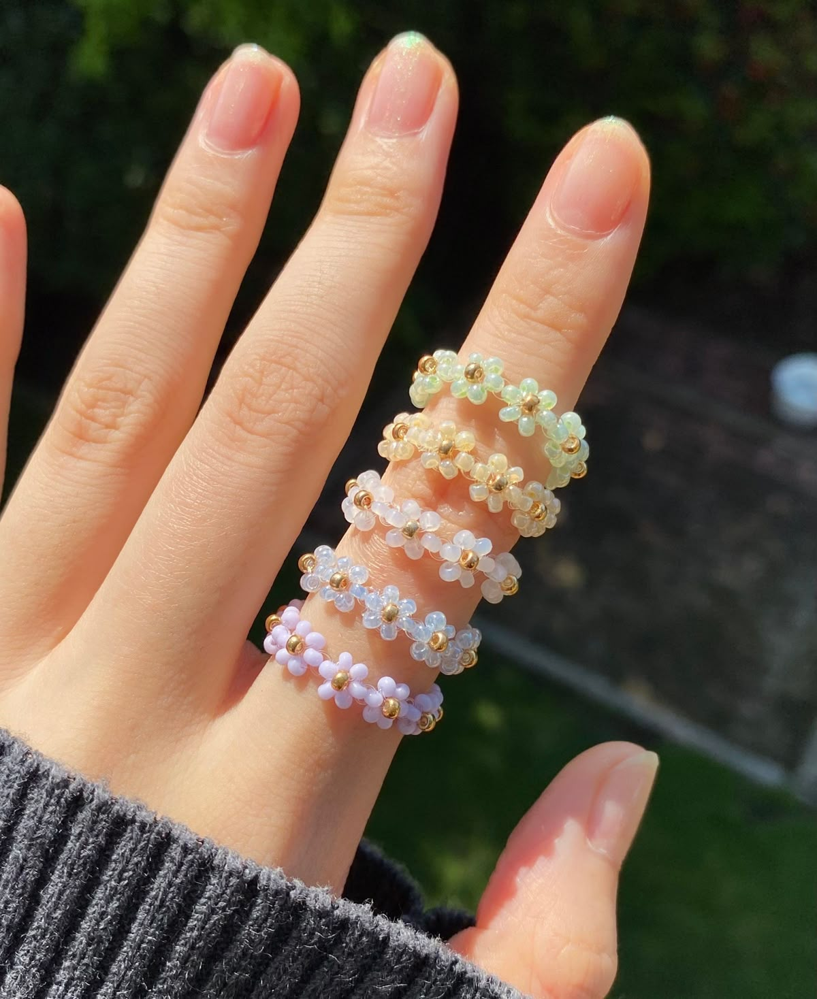
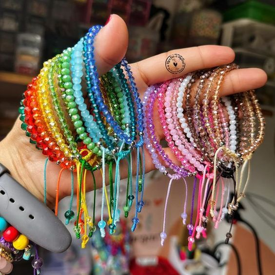
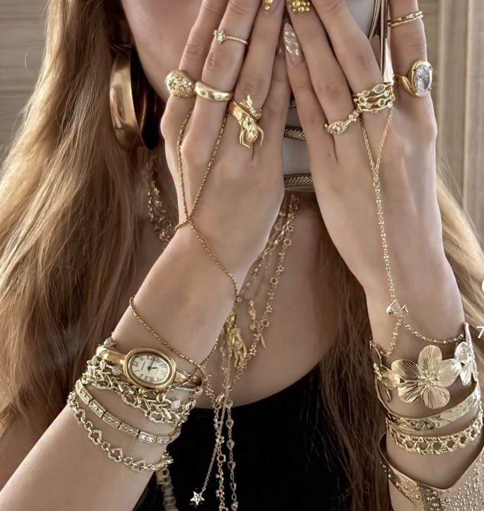

Wishlist · Accesorios
Opciones de accesorios
Ideas de accesorios que me gustan mucho. Recuerda que soy team Gold jeje.



Wishlist · Accesorios
Ideas de accesorios que me gustan mucho. Recuerda que soy team Gold jeje.


